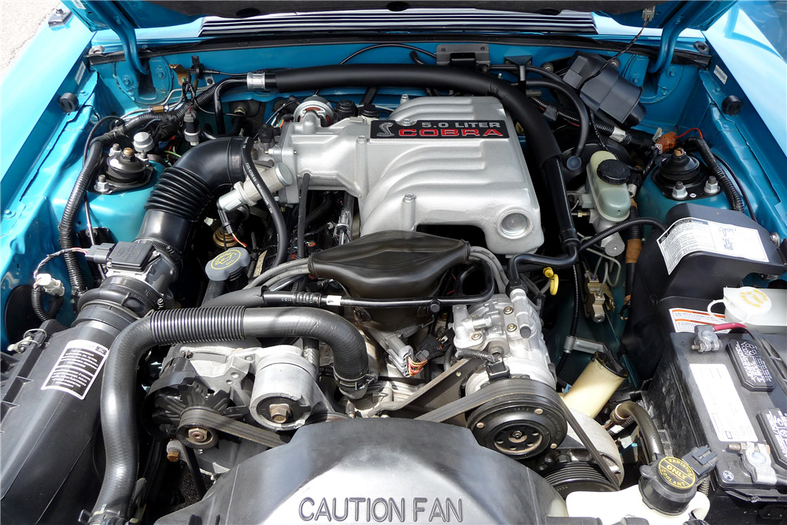

The Foxbody Mustang (1979-1993)
The Foxbody Mustang is widely considered the car that saved the Mustang brand. Built on the versatile Fox platform, it provided a lightweight chassis perfect for daily driving and performance racing.
Featured Build: Two tone GT Hatchback
Why Collectors Love the Foxbody
- The 5.0 Motor: Famous for its reliability and iconic exhaust note.
- Light Weight: The notchback models are incredibly light for a V8 chassis.
- Aftermarket Support: Ability to build a custom car entirely from performance catalogs.

The legendary 5.0L V8 with GT40 top end
Engine Performance Evolution
| Year Range | Engine | Horsepower |
|---|---|---|
| 1979 - 1981 | 5.0L V8 (Carbureted) | 140 hp |
| 1987 - 1992 | 5.0L High Output (Fuel Injected) | 225 hp |
| 1993 | 5.0L SVT Cobra | 235 hp |